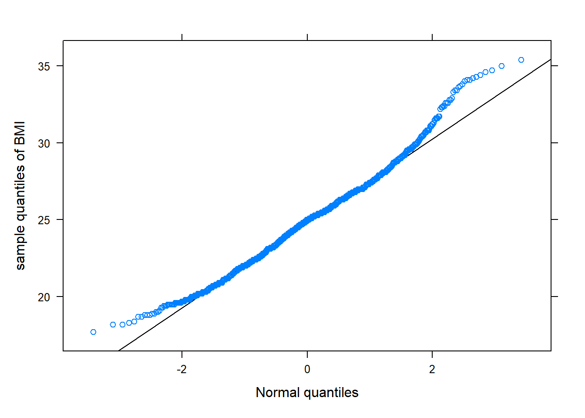

AI art generated from the text “Summarizing numerical data”
Here we cover the following graphically and numerical summaries:
histogram
mean and standard deviation
median and interquartile range
boxplots
quantile-quantile plots
scatterplots
correlation
strip plot
10.1 Single numerical variable
Often it helps to summarize the distribution by quantifying its center and spread. The mean or average is the most common way to measure the center of a distribution. A common way to measure spread or variability of the distribution is the standard deviation.
Here, we denote the mean of sample or sample mean by \(\bar{x}\). The sample standard deviation is denoted by \(s\). The function mean() and sd() computes the mean and standard deviation of a sample of data, respectively:
R functions
### mean( ~ x , data, na.rm)
# x: Replace x with the name of the variable of interest
# data: Set equal to dataframe name
# na.rm: Should missing values be remove? The
# default is FALSE. Set equal to TRUE if
# missing values are to be excluded.
#
### sd( ~ x , data, na.rm)
#
Many of the R functions used in these modules will have identical arguments. Therefore, while the arguments will be provided for any functions used, arguments such as x, data, … will generally no longer be described.
Other measures of the center and spread of the distribution used in practice are the median and interquartile range (IQR) range, respectively. The median, denoted \(M\), is the (middle) value separating the upper half from the lower half of the ordered sample of data. The IQR measures the spread of the middle half of the data. Measures of center are generally used to describe what a “typical” value in the data, where as measures of spread quantify the amount of variability in the sample. The function median() and iqr() computes the median and IQR of a sample of data:
R functions
### median( ~ x , data, na.rm)
#
### IQR( ~ x , data, na.rm)
#
Note
The case study data given in Section 1.1 consist of a single numerical variable: Survival. Here we compute the measures of center and spread discussed above for Survival:
# import datadssurv<-read.csv("datasets/dssurv.csv")library(mosaic)# provides formula interface for the functions below.# Note: this dataset does not have any missing valuesmean(~Survival , data=dssurv)#> [1] 62.22median(~Survival , data=dssurv)#> [1] 59.56sd(~Survival , data=dssurv)#> [1] 12.07902IQR(~Survival , data=dssurv)#> [1] 11.45
Which summary statistics better describes the center and spread of the distribution depends on the shape of the distribution provided by graphical summaries (to be discussed later).
Mean
Median
Std. deviation
IQR
62.22
59.56
12.079
11.45
Histograms provide a visualization of the distribution of a single numerical variable, where observations are placed into bins of equal length along the horizontal axis so that a bin represents an interval of numbers. Like bar graphs, the histogram consists of bars with widths determined by the bins. The higher the bar, the higher the relative proportion of observations that fall in the respective bin
Generally, attention should be paid to certain features of the distribution, such as
Overall pattern of graph
symmetric?
skewed right (a few unusually large measurements, the longer tail is on the right side)?
skewed left (a few unusually small measurements, the longer tail is on the left side)?
Outlying, extreme observations, or values that are far away from the bulk of the data?
### histogram( ~ x , data , xlab , ylab , main , type , nint , xlim , ylim, col )
# xlab: Set equal to the label for x-axis (optional).
# ylab: Set equal to the label for y-axis (optional).
# main: Set equal to the title of the plot (optional).
# type: Set equal to "percent", "count", or "density" (default).
# nint: Set equal to the number of desired bins (optional).
# xlim: Set equal to the range of the x-axis (e.g., c(0, 1) provides
# a lower bound 0 and upper bound of 1) (optional).
# ylim: Set equal to the range of the y-axis (optional).
# col: Set equal to desired color. Default color is cyan (optional).
#
A frequency histogram is obtained by type="count". A relative frequency histogram is a histogram where relative frequencies are plotted on the y-axis. The relative frequencies are provided as percentages with type="percent". A density histogram (type="density") is just a modified relative frequency histogram in that the area of each rectangle equals the relative frequency of the corresponding class, and the area of the entire histogram equals 1.
Note
The case study given in Chapter 4 provides the BMI values for various regions and countries. Here we create a histogram of the variable BMI:
# Import databmidf<-read.csv("datasets/BMIcsdata.csv")library(lattice)# provides histogram()histogram(~BMI , data=bmidf , type="count" , xlab="Body Mass Index" , main="Frequency histogram")histogram(~BMI , data=bmidf , type="density" , xlab="Body Mass Index" , main="Density histogram" , col="green")histogram(~BMI , data=bmidf , type="density" , xlab="Body Mass Index" , main="Using specified number of bins" , nint=20 , col="pink")
Figure 10.1: Frequency histogram
Figure 10.2: Density histogram
Figure 10.3: Density histogram with additional options
The distribution of BMI looks roughly symmetric.
A boxplot is another common graphical summary that provides a visual of the five-number summary (the maximum and minimum values, the lower and upper quartiles, and the median). The function bwplot() creates a boxplot.
R functions
### bwplot( ~ x , data , xlab, ylab, main, xlim, ylim, box.ratio, fill, panel, pch)
# box.ratio: Set equal to a number between 0 and 1 to control the
# width of the rectangles. (optional)
# fill: Set equal to color to fill the box. Be default the box
# is clear.
# panel: Set equal to panel.violin to create violin plot.
(optional)
# pch: Set equal to "|" to denote median by a line rather than dot. (optional)
#
Note
The code below creates a boxplot of the variable BMI:
# bwplot() is from the lattice package.library(lattice)bwplot(~BMI , data=bmidf , xlab="Body Mass Index" , main="Boxplot of BMI")bwplot(~BMI , data=bmidf , xlab="Body Mass Index" , main="Boxplot of BMI with additional options" , box.ratio=.5 , fill="orange" , pch="|")
Figure 10.4: Boxplot
Figure 10.5: Boxplot of BMI with additional options
The dot inside the box represents the median. The two boundaries of the box are called the first quartile (the 25th percentile) and the third quartile (the 75th percentile). Extending out from the box, the whiskers reflect the range of data outside of the box and reach the minimum and the maximum values, unless unless there are potential outliers (points beyond the whiskers). When the median is closer the first (third) quartile than the median, the distribution is potentially skewed left (right).
An extension of the boxplot is a violin boxplot or plot. This plot is a hybrid of a box plot and a kernel density plot (think of a kernel density plot as a smooth density histogram). The violin boxplot conveys the same information as the boxplot, but provides better picture of distribution. The code below creates a violin boxplot.
Note
The code below creates a violin plot of the variable BMI:
# bwplot() is from the lattice package.bwplot(~BMI , data=bmidf , xlab="Body Mass Index" , main="Violin plot of BMI" , panel =panel.violin)
The middle part of the plot is the widest because it has the most data and has the highest data density. The lower and upper ends of the violin plot are thinner because there are fewer data points in these regions.
Quantile-quantile plots, also known as QQ-plots, allow one to view the distributional similarity between two sets of sample data. With a QQ-plot, the observed values of a sample are plotted against the expected values of a theoretical distribution, usually a normal distribution. If the sample data are approximately normally distributed, the QQ-plot will show points on a scatterplot that approximately or roughly follow a straight or linear line. We limit our discussion to normal QQ-plots, which plot the sample quantiles of a sample against the quantiles of a normal distribution. The function normqqplot creates the normal QQ-plot.
R functions
### normqqplot( ~ x , data , ylab, main)
# x: Relace x with the name of the variable of interest
# data: Set equal to dataframe name only if x is stored in the dataframe.
# Otherwise, do not include this argument if the variable is
# in R's memory (outside a dataframe)
# Note: xlab will always have the label 'Normal quantiles`.
Note
The code below creates a normal QQ-plot of the variable BMI:
# Source the function so that it's R's memory.source("rfuns/normqqplot.R")# Use the normqqplot() function to create a QQ plot # of the BMI variable in the bmidf dataset.normqqplot(~BMI , data=bmidf , ylab="sample quantiles of BMI")

Figure 10.6: Boxplot
While the points of the QQ-plot follow a linear trend in the middle, they taper off to form a slightly “u” shaped pattern. This is a sign that the distribution of the data is skewed right.
The behavior of the QQ-plot gives a sense of the normality of data and can also provide some guidance on the distribution of non-normal data, depending on the trend exhibited by the points and how they deviate from the linear line. If the tails of a QQ-plot wander off in opposite directions but follow a linear line in the middle, it is a sign that the distribution of the data resembles a heavy-tailed distribution. On the other hand, if the points follow a “u” or “n” shape, it indicates that the data distribution is skewed, with clearer “u” or “n” shapes indicating stronger skewness.
10.2 Two or more numerical variable
A scatterplot graphically summarizes the relationship between two numerical variables. When describing a scatterplot, look for the following features:
What is the direction of the pattern? Positive or negative association
Are there any unusual observations? Clusters or outliers.
Linear relationship, non-linear relationship, or no relationship (no linear or non-linear trend)?
### xyplot( y ~ x , data , xlab, ylab, main, xlim, ylim, col, pch )
# y: replace y with the name of the response numerical variable.
# x: replace x with the name of the explanatory numerical variable.
# col: Set equal to desired color for points. (optional)
# pch: Set equalt o a number between 1-25 to change the point symbol. (optional)
#
Note
The case study given in Chapter 3 consists of several variables (PM10, AQI, temp …, county, and City.Name). Here, we graphically summarize the relationship between daily PM10 levels and daily temperature:
# Import datapmdf<-read.csv("datasets/dailyPM10.2021.csv")# create a scatterplot of PM10 vs temperaturexyplot(PM10~temp, # response variable (y-axis) is PM10, explanatory variable (x-axis) is temperature data =pmdf, # data is set to pmdf ylab ="Daily PM10", # label for the y-axis xlab ="Daily temperature", # label for the x-axis main ="PM10 vs temperature")# main title of the plot
The relationship is clearer on the square root scale:
Code
### mutate( dataframe ,'new variable' = 'function of variable in data frame', ...)pmdf<-mutate(pmdf, PM10sqrt=sqrt(PM10) , tempsqrt=sqrt(temp))# pmdf now has two additional variables: "square root versions' of # PM10 and tempxyplot(PM10sqrt~tempsqrt , data=pmdf , ylab="Daily PM10 (square root scale)" , xlab="Daily temperature (square root scale)" , main="PM10 vs temperature (on transformed scale)" , col="black")
The scatterplots suggest that there is a positive association between daily PM10 and temperature levels, as well as outlying observations but less so on the transformed scale.
The scatterplot conveys the direction and type of relationship. If the data shows a linear trend, then correlation may be used to numerically summarize the strength and direction of the relationship. Correlation is a sample statistic generally referred to as the correlation coefficient or sample correlation, denoted by \(r\). \(r\) will always be between -1 and 1, with \(|r|\) closer to one reflecting a stronger linear association, with positive (negative) values quantifying positive (negative) associations. The following guidelines regarding the size and the strength of the relationship will aid interpretation:
\(|r|\geq 0.9\): Very strong linear association
\(0.7 \leq |r| < 0.9\): Strong linear association
\(0.4 \leq |r| < 0.7\): Moderate linear association
We use the sample correlation to quantify the strength and direction of the relationship between PM10 and temp:
Code
library(mosaic)# provides formula interface for the functions below.# The variable `temp` has missing values but currently # the standard argument to remove missing values does # not work. Instead, we us na.omit() on the dataframe# so that all missing values are omitted from the data# for the purpose of this function. cor(PM10~temp , data=na.omit(pmdf))#> [1] 0.3680937cor(PM10sqrt~tempsqrt , data=na.omit(pmdf))#> [1] 0.4875372
The sample correlations shows that there this weak and moderate linear association between the variables, with the variables on the transformed scaled having a moderate association.
If the explanatory variable is a factor/categorical variable, then boxplots, violin plots, and strip plots can summarize the relationship between the response and the explanatory variable. In the strip plot, values of the response as shown as dots along the factor level, and generally the dots with the same value can overlap.
R functions
### bwplot( y ~ x , data , xlab, ylab, main, xlim, ylim, box.ratio,
varwidth, horizonal, panel )
# y: Replace y with the name of the response categorical variable.
# x: Replace x with the name of the explanatory categorical variable.
# horizontal: Set equal to TRUE if boxplots are to be drawn
# horizontally. If set equal to true, change y~x
# to x ~ y.
#
### stripplot( y ~ x , data , xlab, ylab, main, xlim, ylim, jitter, horizonal)
# jitter: Set equal to TRUE to add jitter (a small bit of meaningless noise) to obervations of
# the response. Default is FALSE.
#
Note
The data for the case study given in Chapter 3 consist of several variables (PM10, AQI, …, county, and City.Name). Here, we graphically explore the relationship of AQI and county.
Code
# import datapmdf<-read.csv("datasets/dailyPM10.2021.csv")### We tell R that 'county' is a factor variable by using### as.factor() within mutate()### mutate( dataframe ,'new variable' = 'function of variable in data frame', ...)pmdf<-mutate(pmdf , county =as.factor(county))# 'county' has three levels. To have different color# boxes for each level use set col to a vector with# three elements reflecting the color for each box, but# this option is optional. # Create a box plot of AQI vs. countybwplot(AQI~county , data=pmdf , xlab="County" , ylab="AQI" , main="AQI vs county" , fill=c("gray", "brown", "cyan") , varwidth=TRUE)# Create a horizontal box plot of AQI vs. countybwplot(county~AQI , data=pmdf , xlab="County" , ylab="AQI" , main="AQI vs county" , horizontal =TRUE)# Create a violin plot of AQI vs. countybwplot(AQI~county , data=pmdf , xlab="County" , ylab="AQI" , main="AQI vs county" , panel=panel.violin)# Create a strip plot of AQI vs. countystripplot(AQI~county , data=pmdf , xlab="County" , ylab="AQI" , main="Strip plot", jitter=TRUE)
Figure 10.7: Vertical boxplots
Figure 10.8: Horizontal boxplots
Figure 10.9: Violin plots
Figure 10.10: Strip plots
All three counties have outlying AQI values. The distribution of AQI for all three counties are roughly symmetric if the outliers are ignored.
The plots above are comparative plots or conditional plots since they graphically summarize a numerical variables at each level of a factor variable. The factor variable in such summaries is typically called a grouping factor variable.
Conditional plots may also be created by having the graphical summary appear in a single panel for each level of the factor variable, which can be achieved by using the | gfactor element within the formula expression, where gfactor represents the grouping factor variable.
R functions
### bwplot( ~ y | gfactor , data , xlab, ylab, main, xlim, ylim, box.ratio,
varwidth, horizonal, panel )
# y: the variable of interest.
# gfactor: The grouping variable.
#
### stripplot( ~ y| gfactor , data , xlab, ylab, main, xlim, ylim,
# jitter, horizontal)
#
Note
Here, the relationship of AQI and county is explored by graphically summarizing AQI the at the factor levels of county.
Code
# For this type of conditional vertical violin plot, use the following formula# expression: y ~ 1 | gfactor bwplot(AQI~1|county , data=pmdf , xlab="County", ylab="AQI" , main="AQI vs county" , panel=panel.violin, horizontal=FALSE)# formula expression: ~ x | gfactorbwplot(~AQI|county , data=pmdf , xlab="County", ylab="AQI" , main="AQI vs county" , fill=c("gray", "brown", "cyan") , varwidth=TRUE)
Figure 10.11: Vertical boxplots
Figure 10.12: Horizontal boxplots
Most functions to graphically or numerically summarize data conditional on the levels of another factor/grouping variable (gfactor) use the general layout of task( y ~ x | gfactor, data ) or task( ~ y | gfactor, data ).